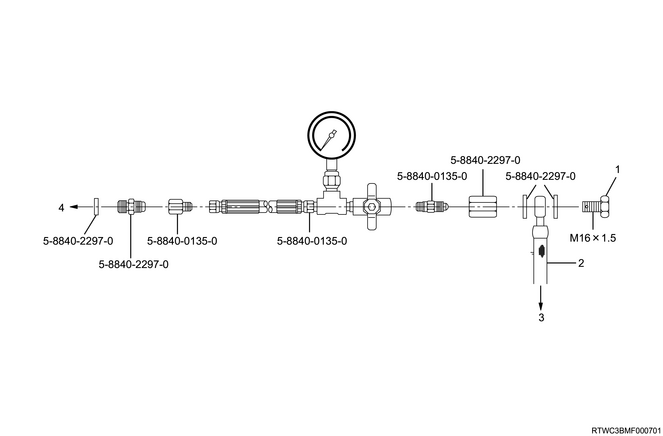

Power steering system test

In the fluid pressure test for the power steering system, the oil pump and the power steering unit are checked to see whether they function properly.
In the power steering system test, the continuity in the oil pressure circuit is tested. The following inspections and corrections should be performed as necessary before conducting this test.
Inspect the pump reservoir to see whether the fluid level is adequate.
Inspect the pump driver gear condition.
When disconnecting or connecting the hose, place a container beneath the pump to prevent fluid from spilling.
With the engine not running, disconnect the pressure hose of the power steering pump, and install the power steering tester: 5-8840-0135-0 and the adapter: 5-8840-2297-0 as shown in the diagram. The gauge must be positioned in between the shut off valve and the pump. Open the shut off valve.
Check the fluid level. Fill the reservoir with the power steering fluid up to the "Full" mark. Start the engine, turn the steering wheel (right or left) as far as it will go and hold it momentarily when it stops. Turn the engine off and check the connection with the tester for fluid leakage.
Bleed air from the system.
Turn on the engine, and check the fluid level. Add power steering fluid if necessary. When the engine is at a normal operating temperature, increase the engine speed to 1,500 r/min.
Caution
Fully close the shut off valve. Record the highest pressure.
When the recorded pressure falls within the range of 9,800 - 10,300 kPa (100 - 105 kg/cm2/1,422 - 1,493 psi), the pump is functioning within specifications.
When the recorded pressure is above 10,300 kPa (105 kg/cm2/1,493 psi), the valve of the pump is defective.
When the recorded pressure is below 9,800 kPa (100 kg/cm2/1,422 psi), the valve of the pump is defective.
If the pump pressure is within specifications, turn (or ask another technician to turn) the steering wheel all the way in both directions with the valve left open. Record the highest pressure, and compare it to the maximum pump pressure recorded in the previous inspection. When the pump pressure is not built up on either side of the power steering unit, it indicates leakage inside the power steering, so perform a replacement.
Turn off the engine and remove the test gauge.
Connect the pressure hose again to check the fluid level, and make any necessary repairs.
If the problem persists, thoroughly inspect the steering and the front suspension.